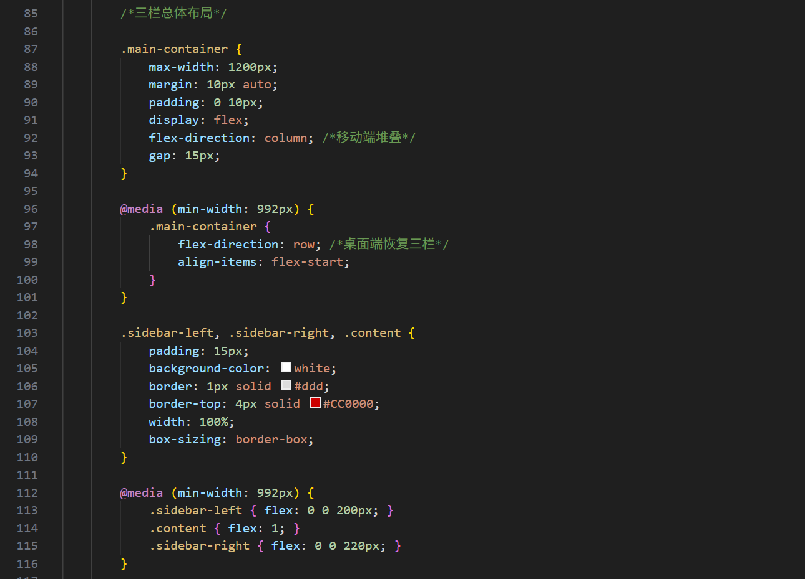
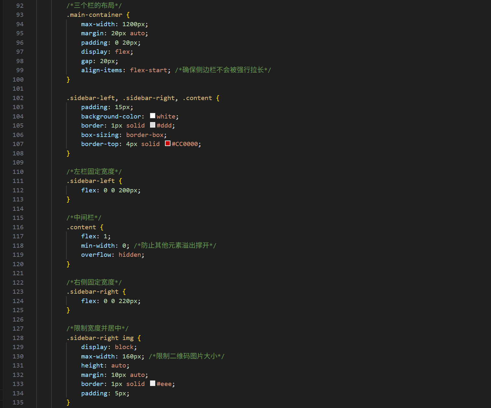
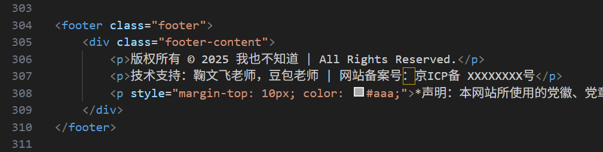
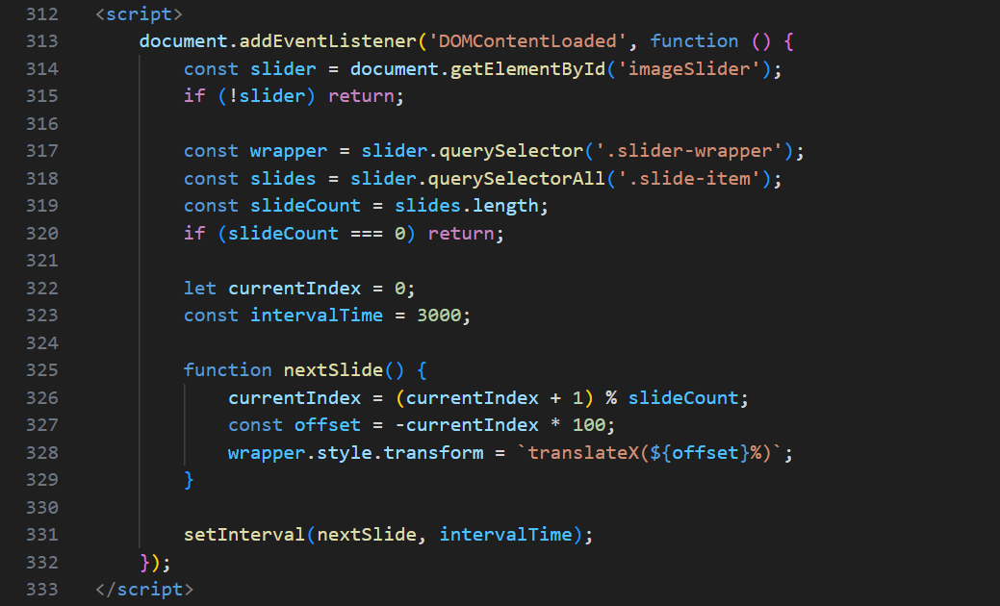

本网站中AI的贡献
在本线下作业的制作过程中，AI主要在以下技术环节提供了支持：
响应式布局优化：
借助AI生成了CSS Media Queries，确保网页在手机、平板和电脑端都能完美适配。
使用代码如下：

优化整体布局：
在设计网页布局的过程中，我发现自己编写的整体布局过于理想和简单，比如插入图片后，图片会改变不同栏的宽度和长度，为了固定每栏格式，我使用AI辅助编写了整体布局代码，固定每个栏目的占据比例，使图片文字和对应的栏目格式一致。
部分代码如下：

另外，由于底端栏目实在不知道写些什么，但是加上会显得整体网页看起来专业很多，于是照猫画虎求助AI编写了以下内容：

两张图片的轮播脚本：
本人手写的CSS代码默认需要三张图片才能实现轮播，然而图片素材有限，仅有的两张图片会导致轮播卡顿或留白。于是借助AI编写了轻量级JavaScript驱动，实现了图片无缝滚动和自动播放。
代码如下：

最后我想说：
这个作业除了表单网页部分是主要人工编写的（当然后期还是让AI优化了下视觉效果），其余网页绝大部分是由AI编写的...我只负责主导设计框架，而AI负责具体的技术实现与代码优化。不过这门课将我带进了程序与代码的大门（实则大一学的全忘了），也正是因为这门课，让我掌握了基础的网页制作的编写逻辑与语言，让我在对AI生成指令和后续对AI生成作品的修改意见上有了更加清晰明确的思路。最后我想谢谢老师和这门课，让我度过了非常充实、收获颇丰的一个学期。祝老师工作顺利，生活愉快！
返回首页